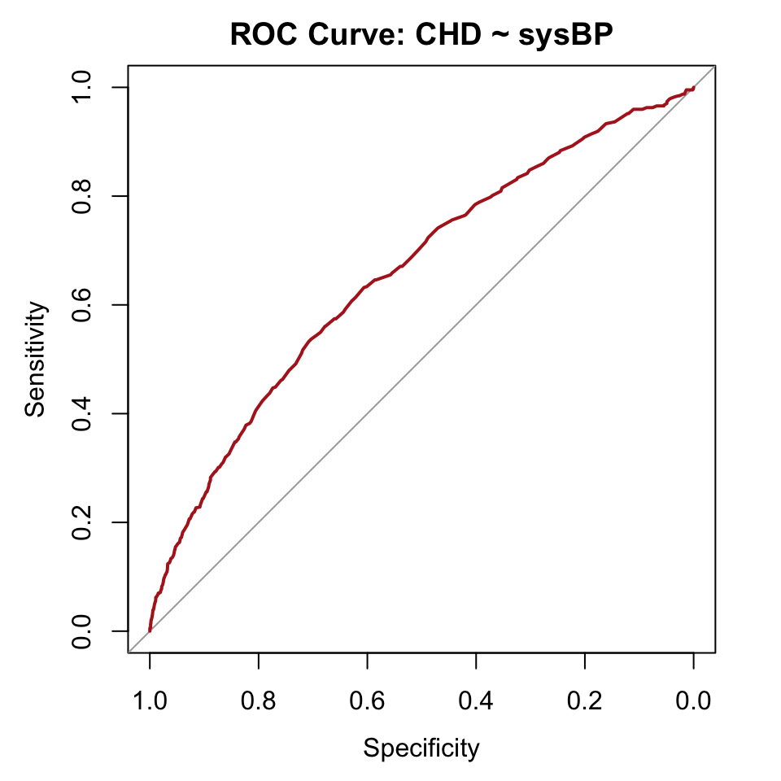

library(tidyverse)
library(this.path)
library(pROC)
setwd(this.dir())
framingham <- read_csv("../../data/framingham.csv") |>
mutate(
male = factor(male, levels = c(0,1), labels = c("Female","Male")),
currentSmoker = factor(currentSmoker, levels = c(0,1), labels = c("Non-smoker","Smoker")),
prevalentHyp = factor(prevalentHyp, levels = c(0,1), labels = c("No","Yes")),
diabetes = factor(diabetes, levels = c(0,1), labels = c("No","Yes")),
TenYearCHD = factor(TenYearCHD, levels = c(0,1), labels = c("No","Yes")),
education = factor(education, levels = 1:4,
labels = c("Some HS","HS Diploma","Some College","College Degree"))
)Day 9 (PM) Lab: Classification and Predictive Performance
SC INBRE Biostatistics Summer Intensive 2026
1 Overview
This lab puts the Day 9 morning material into practice. You will turn predicted probabilities into classifications, build confusion matrices, compute performance metrics, construct ROC curves, and compare models.
How this lab works:
- Part 1 (instructor demo, ~20 min): Follow along as the instructor walks through a complete classification evaluation using a simple logistic model.
- Part 2 (on your own, ~90 min): Six exercises of increasing difficulty. Create a new
.qmdfile, work through each exercise, render when done.
The Quick Reference Card in Section 3 has the key functions.
2 Part 1: Instructor Demo
2.1 Setup
2.2 Step 1: Fit a Model and Get Predicted Probabilities
We re-fit a simple logistic model predicting CHD from sysBP and add predicted probabilities to the dataset.
model_bp <- glm(TenYearCHD ~ sysBP,
data = framingham,
family = binomial)
framingham <- framingham |>
mutate(p_bp = predict(model_bp, type = "response"))
framingham |>
select(TenYearCHD, sysBP, p_bp) |>
summary() TenYearCHD sysBP p_bp
No :3596 Min. : 83.5 Min. :0.04782
Yes: 644 1st Qu.:117.0 1st Qu.:0.10108
Median :128.0 Median :0.12778
Mean :132.4 Mean :0.15189
3rd Qu.:144.0 3rd Qu.:0.17715
Max. :295.0 Max. :0.89060 2.3 Step 2: Classify at Two Thresholds
# Threshold = 0.50
framingham <- framingham |>
mutate(pred_50 = factor(if_else(p_bp > 0.50, "Yes", "No"),
levels = c("No", "Yes")))
table(Predicted = framingham$pred_50, Actual = framingham$TenYearCHD) Actual
Predicted No Yes
No 3586 631
Yes 10 13Almost nobody gets classified as positive at 0.50. Now try 0.15:
framingham <- framingham |>
mutate(pred_15 = factor(if_else(p_bp > 0.15, "Yes", "No"),
levels = c("No", "Yes")))
tab_15 <- table(Predicted = framingham$pred_15, Actual = framingham$TenYearCHD)
tab_15 Actual
Predicted No Yes
No 2438 283
Yes 1158 3612.4 Step 3: Compute Sensitivity and Specificity
TP <- tab_15["Yes", "Yes"]
FP <- tab_15["Yes", "No"]
TN <- tab_15["No", "No"]
FN <- tab_15["No", "Yes"]
tibble(
Sensitivity = TP / (TP + FN),
Specificity = TN / (TN + FP),
PPV = TP / (TP + FP),
NPV = TN / (TN + FN)
) |> round(3)# A tibble: 1 × 4
Sensitivity Specificity PPV NPV
<dbl> <dbl> <dbl> <dbl>
1 0.561 0.678 0.238 0.8962.5 Step 4: ROC Curve and AUC
roc_bp <- roc(framingham$TenYearCHD, framingham$p_bp,
levels = c("No", "Yes"), direction = "<")
plot(roc_bp, col = "firebrick", lwd = 2,
main = "ROC Curve: CHD ~ sysBP")
auc(roc_bp)Area under the curve: 0.6563The AUC for sysBP alone is modest. Adding more predictors (tomorrow’s model comparison) should improve this.
3 Part 2: Exercises
3.1 Instructions
Step 1. Open a new Quarto document. Title it "Day 9 Lab: Classification and Predictive Performance".
Step 2. Replace the template content with this YAML and setup chunk:
---
title: "Day 9 Lab: Classification and Predictive Performance"
subtitle: "SC INBRE Biostatistics Summer Intensive 2026"
date: today
format:
html:
toc: true
theme: cosmo
execute:
echo: true
warning: false
message: false
---
```{r}
library(tidyverse)
library(this.path)
library(pROC)
setwd(this.dir())
framingham <- read_csv("../../data/framingham.csv") |>
mutate(
male = factor(male, levels = c(0,1), labels = c("Female","Male")),
currentSmoker = factor(currentSmoker, levels = c(0,1), labels = c("Non-smoker","Smoker")),
prevalentHyp = factor(prevalentHyp, levels = c(0,1), labels = c("No","Yes")),
diabetes = factor(diabetes, levels = c(0,1), labels = c("No","Yes")),
TenYearCHD = factor(TenYearCHD, levels = c(0,1), labels = c("No","Yes")),
education = factor(education, levels = 1:4,
labels = c("Some HS","HS Diploma","Some College","College Degree"))
)
```Step 3. Work through Exercises 1–6 in order.
Step 4. Render when finished.
Note
Exercises 1–4 cover the core material. Exercise 5 compares two models head-to-head. Exercise 6 is a challenge on honest evaluation.
Exercise 1 – Predicted Probabilities from Two Models.
Restrict to complete cases on
TenYearCHD,age,currentSmoker,sysBP,totChol, anddiabetesusingdrop_na().Fit two logistic regression models:
model_simple:TenYearCHD ~ agemodel_full:TenYearCHD ~ age + currentSmoker + sysBP + totChol + diabetes
Add predicted probabilities from both models to the dataset as
p_simpleandp_fullusingpredict(..., type = "response").Use
summary()on both columns. What is the range of predicted probabilities for each model? Which model produces a wider spread?
# your code hereExercise 2 – Confusion Matrices at Different Thresholds.
Using the p_full probabilities from Exercise 1:
Create classifications at three thresholds: 0.10, 0.20, and 0.50, using
if_else(p_full > threshold, "Yes", "No")wrapped infactor().Build a confusion matrix at each threshold with
table(Predicted = ..., Actual = ...).As the threshold increases from 0.10 to 0.50, what happens to the number of predicted positives? What about predicted negatives?
# your code hereExercise 3 – Computing Sensitivity, Specificity, PPV, NPV.
For each of the three confusion matrices from Exercise 2, compute sensitivity, specificity, PPV, and NPV by hand. Extract TP, FP, TN, FN from the confusion matrix, then compute:
Sensitivity = TP / (TP + FN) Specificity = TN / (TN + FP) PPV = TP / (TP + FP) NPV = TN / (TN + FN)Which threshold gives the highest sensitivity? Which gives the highest specificity? Can you have both at the same time?
# your code hereExercise 4 – ROC Curve and AUC.
Use
roc()from thepROCpackage to build an ROC curve for the full model:roc_full <- roc(your_data$TenYearCHD, your_data$p_full, levels = c("No", "Yes"), direction = "<")Plot the ROC curve with
plot(roc_full, col = "firebrick", lwd = 2). Describe the shape of the curve. Does it bow far from the diagonal?Compute the AUC with
auc(roc_full). Using the interpretation table from the morning lecture (0.5 = coin flip, 0.7–0.8 = acceptable, 0.8–0.9 = excellent, >0.9 = outstanding), how would you describe this model?
# your code hereExercise 5 (Challenge) – Honest AUC via Train/Test Split.
The AUC values in Exercise 4 were computed on the same data used to fit the models. This overestimates how well the model will perform on new data.
Set a random seed with
set.seed(2026)for reproducibility. Split your complete-cases dataset into 70% training and 30% test:n <- nrow(your_data) train_idx <- sample(seq_len(n), size = round(0.7 * n)) train <- your_data[train_idx, ] test <- your_data[-train_idx, ]Fit the full model on the training data only.
Use
predict()to get predicted probabilities on the test data.Compute the training AUC and the test AUC. Is the test AUC lower? By how much?
Discussion. Why is the test AUC a more honest measure of model performance? If the gap between training and test AUC were very large (e.g., 0.85 vs. 0.65), what would that suggest about the model?
# your code here4 Quick Reference Card
4.1 Setup
library(tidyverse)
library(this.path)
library(pROC)
setwd(this.dir())
framingham <- read_csv("../../data/framingham.csv")4.2 Predicted Probabilities
# Add fitted probabilities to the dataset
df <- df |> mutate(p_hat = predict(model, type = "response"))
# Predict for new individuals
predict(model, newdata = new_data, type = "response")4.3 Classification at a Threshold
df <- df |>
mutate(pred_class = factor(if_else(p_hat > 0.15, "Yes", "No"),
levels = c("No", "Yes")))
tab <- table(Predicted = df$pred_class, Actual = df$TenYearCHD)
tab4.4 Computing Metrics from a Confusion Matrix
TP <- tab["Yes", "Yes"]
FP <- tab["Yes", "No"]
TN <- tab["No", "No"]
FN <- tab["No", "Yes"]
Sensitivity <- TP / (TP + FN)
Specificity <- TN / (TN + FP)
PPV <- TP / (TP + FP)
NPV <- TN / (TN + FN)4.5 ROC Curves and AUC
# Build ROC curve
roc_obj <- roc(df$Y, df$p_hat, levels = c("No", "Yes"), direction = "<")
# Plot
plot(roc_obj, col = "firebrick", lwd = 2)
# AUC
auc(roc_obj)
# Best threshold by Youden's J
coords(roc_obj, "best", best.method = "youden")
# Compare two ROC curves
plot(roc1, col = "firebrick", lwd = 2)
plot(roc2, col = "steelblue", lwd = 2, add = TRUE)
# Test whether AUCs differ significantly
roc.test(roc1, roc2)4.6 Train/Test Split
set.seed(2026)
n <- nrow(df)
train_idx <- sample(seq_len(n), size = round(0.7 * n))
train <- df[train_idx, ]
test <- df[-train_idx, ]
# Fit on training, predict on test
model_train <- glm(Y ~ x1 + x2, data = train, family = binomial)
test$p_hat <- predict(model_train, newdata = test, type = "response")
# AUC on test
roc_test <- roc(test$Y, test$p_hat, levels = c("No", "Yes"), direction = "<")
auc(roc_test)4.7 AUC Interpretation
| AUC | Discriminative ability |
|---|---|
| \(\approx\) 0.5 | No discrimination (coin flip) |
| 0.6 – 0.7 | Poor |
| 0.7 – 0.8 | Acceptable |
| 0.8 – 0.9 | Excellent |
| > 0.9 | Outstanding |